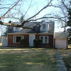

|  |
St. Ann's Hermitage
Acquired in 1997
Private residence |
In 1905, with the help of Father H. Havens Richards, SJ, St. Ann's Hermitage was the first building in Poughkeepsie purchased by the Marist Brothers. It had previously been the homestead of the MacPherson family. Brother Zepheriny, FMS, purchased this estate from its owner, Mrs. Goodwin of New York City. The property, which was at the time a mile outside of the City of Poughkeepsie, included some 35 acres north of the Waterworks Road and sold for $9,000.00. This building was used as a Provincial House until the early fifties. In addition to the provincial administration, it also housed the Scholastics usually numbering around 75 students. There was a chapel with a pipe organ where a Jesuit from St. Andrew's celebrated daily mass. Also living in this building was a community consisting of the provincial tailors who made the cassocks for all the Brothers of the province. Others living in this building included a director, a cook, several young brothers to help in the tailor shop, in the garden, and with the laundry, a farmer who took care of the cows and pigs, and two farmers who took care of an extensive vegetable garden and a greenhouse which was located across from St. Peter's. The infirmary, which had from 5 to 13 Brothers who needed medical attention, was also located in this building.
Between 1955 to 1957 the original Fontaine Hall was built to house the scholastics, the faculty was moved to St. Peter's, and the infirmary was relocated to Tyngsboro, Massachusetts. The farmers were moved to St. Peter's leaving the Hermitage empty. In 1958, it was decided the building should be demolished. However, before the demolition was completed the building caught fire and burned to the ground.
In 1997 the College purchased a private residence that has been renamed St. Ann's in memory of the building that served the Marist Brothers for over 50 years. This former home is part of the 13-acre estate known as Fern Tor, adjacent to Marist College's northern boundary. A previous resident of Fern Tor was Thomas Newbold, one of the founders of the Horticultural Society of New York and an uncle of Pulitzer Prize-winning American novelist and short story writer Edith Wharton.